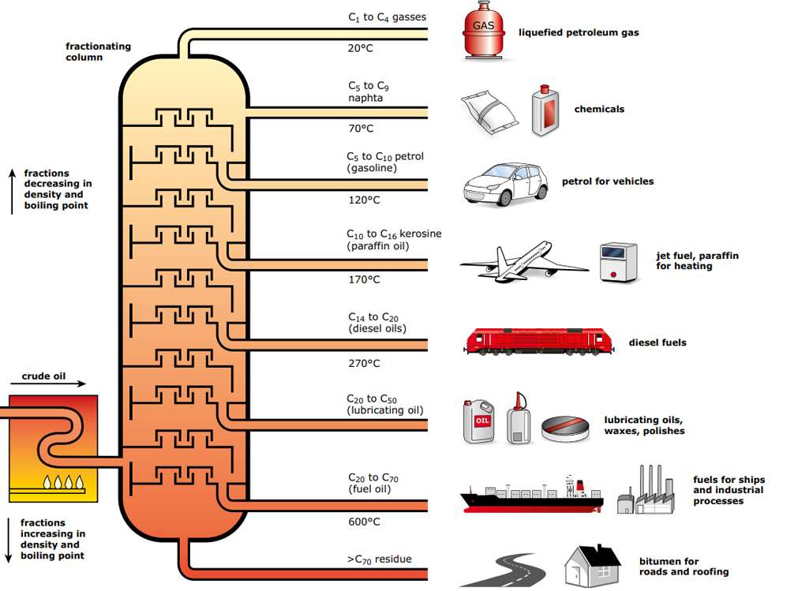

My Notes
Oil Exploration in a nutshell
In the current world where decarbonisation is getting popular due to existing global warming and future pollution threats, oil and gas still holds a prominent position as a fuel. Oil or black gold as commonly referred in geopolitics, plays a crucial role in world economy, energy and daily life of people whether directly or indirectly. This article delves into the exploration and production (E&P) science behind oil and natural gas.
The E&P as referred in the industry involves various segments from oil exploration to processing and final production of petrochemicals. The production process of oil can be divided as: Exploration: Geophysics (study of oil in place in subsurface), Reservoir engineering (study of subsurface geology and oil properties), Drilling (drilling well for oil extraction), Production (extraction of oil and gas to surface) and Processing (separation of Oil and gas, processing into petrochemicals like Diesel, Petrol, Natural gas). These individual segments involve huge internal engineering and studies. We will be covering each of these segments in brief in this blog ahead.
 E & P Overall
E & P Overall
Exploration
This phase involves the use of geophysics to study the subsurface and identify potential oil and gas reservoirs. Geophysical methods such as seismic surveys utilize principles of wave propagation and reflection to create images of the subsurface. These images help geoscientists locate potential reservoirs based on variations in rock properties.
-
Geophysicists employ various techniques such as seismic surveys, electromagnetic methods, and gravity surveys to investigate the subsurface structures and identify potential hydrocarbon reservoirs. Seismic surveys involve sending sound waves into the earth and recording their reflections to create detailed images of underground formations.
-
Advanced software tools like Schlumberger's Petrel and Landmark's Decision Space are indispensable for interpreting seismic data. Geophysicists utilize these tools to analyze seismic data, interpret subsurface structures, and identify potential reservoir formations.
-
Geophysical data, along with other geological information, is utilized for reservoir characterization. Analytical methods such as seismic attribute analysis, velocity modeling, and inversion techniques are employed to estimate reservoir properties like porosity and fluid saturation. Seismic attributes are quantitative measurements derived from seismic data that provide valuable information about subsurface properties. Geophysicists analyze these attributes to identify geological features such as faults, fractures, and potential reservoir zones.
-
Velocity modeling involves estimating the velocity of seismic waves through the subsurface layers. Accurate velocity models are crucial for properly imaging subsurface structures and characterizing reservoir properties.
-
Inversion techniques are used to transform seismic data into models of subsurface properties such as rock properties, fluid content, and reservoir geometry. These techniques help in refining reservoir models and improving the understanding of reservoir heterogeneity.
-
Geophysical data is integrated with geological data, including well logs, core samples, and surface geology, to develop a comprehensive understanding of the subsurface environment.
Siesmic interpretation operation
-
Geophysicists also play a key role in assessing exploration risks by evaluating the likelihood of encountering hydrocarbons based on geophysical data and geological understanding.
Reservoir Engineering
Once a potential reservoir is identified, reservoir engineers utilize principles of fluid mechanics and thermodynamics to assess the characteristics of the reservoir. This includes determining properties such as porosity, permeability, and fluid saturation, which are crucial for estimating reserves and designing production strategies. Fundamental equations such as Darcy's law and material balance equations govern the reservoir engineering calculations. Following are some important areas where in reservoir engineering is applied to:
- Reservoir Characterization: This phase involves gathering data from various sources such as well logs, seismic surveys, core samples, and production history. Reservoir engineers analyze these data to characterize the geological properties of the reservoir, including porosity, permeability, fluid properties, and reservoir geometry.
Typical Reservoir Simulation Model
-
Using reservoir simulation software, engineers simulate fluid flow through the reservoir over time, considering factors such as pressure, temperature, fluid composition, and rock properties.
This simulation helps in understanding how fluids (oil, gas, and water) move within the reservoir and how production strategies affect reservoir performance.
-
Reservoir engineers employ analytical methods like material balance calculations, pressure transient analysis (PTA), and decline curve analysis (DCA) to estimate reserves.
These techniques help in determining the total volume of recoverable hydrocarbons in the reservoir and their distribution.
-
Based on reservoir simulation results and reserve estimates, engineers develop strategies to optimize production.
This may involve designing well placement and completion strategies, implementing artificial lift techniques, and managing production rates to maximize recovery while minimizing costs.
-
Reservoir engineers explore and simulate enhanced oil recovery techniques such as water flooding, gas injection (CO2 or natural gas), chemical flooding, and thermal methods (steam injection).
Numerical reservoir models are used to optimize EOR strategies, considering factors such as sweep efficiency, fluid displacement, and injectant compatibility.
-
Throughout the project lifecycle, engineers continuously monitor reservoir performance using real-time data from production wells, pressure gauges, and surveillance technologies.
This monitoring helps in identifying changes in reservoir behavior, assessing the effectiveness of production strategies, and making adjustments as needed.
Reservoir Engineering Analysis
Drilling
Drilling involves the construction of wells to access the hydrocarbon reservoirs identified during exploration. Engineering principles from various disciplines such as mechanical, petroleum, and materials engineering are applied to design and execute drilling operations safely and efficiently. Formulas related to drilling hydraulics, wellbore stability, and casing design are utilized to ensure the integrity of the wellbore.
- Well Trajectory Design:
- Drilling Equipment Selection:
- Analytical Methods:
- Wellbore Stability Analysis:
- Hydraulics Calculations:
- Torque and Drag Modeling:
- Monitoring and Surveillance:
- Safety and HSE:
-
Drilling engineers utilize software tools such as Halliburton's Landmark WellPlan and Baker Hughes' JewelSuite to design optimal well trajectories. These trajectories are planned to intersect target reservoirs while considering geological constraints and operational factors.
-
Based on well trajectory designs, drilling engineers select appropriate drilling equipment and technologies. Software tools assist in evaluating factors such as drill bit selection, casing design, and drilling fluid properties.
Typical Subsurface Drilling Operation
-
Drilling engineers employ analytical methods to ensure safe and efficient drilling operations. Techniques such as wellbore stability analysis, hydraulics calculations, and torque and drag modeling are used to assess drilling risks and optimize drilling parameters.
-
This analysis involves evaluating the mechanical stability of the wellbore to prevent issues such as borehole collapse or formation damage during drilling.
-
Hydraulics calculations are performed to determine the flow of drilling fluids and optimize parameters such as flow rate, pressure, and viscosity to achieve efficient drilling and wellbore cleaning.
-
Torque and drag modeling helps in predicting the forces acting on the drill string during drilling operations. By understanding these forces, engineers can optimize drilling parameters to minimize wear and maximize drilling efficiency.
-
Drilling operations are continuously monitored using real-time data acquisition systems. Drilling optimization software like NOV's RigSense and Schlumberger's GeoSphere analyze data from sensors downhole and on the rig to provide insights into drilling performance and potential hazards.
Real-time data analysis enables drilling engineers to make informed decisions during drilling operations. By identifying trends and anomalies in drilling parameters, engineers can adjust drilling parameters, equipment configurations, and drilling strategies to optimize performance and mitigate risks.
-
Drilling engineers prioritize safety and environmental protection throughout the drilling process. Measures are implemented to prevent well control incidents, minimize environmental impact, and ensure compliance with regulatory requirements.
Casing and Cementation
Once the oil well is drilled, the well is cemented and cased to be ready for oil production. A typical oil well runs deep into subsurface and may have features like deviations, and geoligical challenges like loose formations, permeable formations containing water, other minerals which may damage the lone borehole. To protect and keep the borehole intact and isolated from the subsurface environment, the borehole is cased. The figure below depicts a typical casing scheme. The surface casing runs in shallow depths and has largest diameter compared to other casings, and its purpose is to seal off the borehole from water/ mineral formations a shallower depths. The intermediate casing usually runs longest in the well lenght at deeper lengths as shown in the figure. While the production casing is the deepest which protects the profuction tube from which the oil ang gas is produced.
Once the casings are placed, the well is perforated at the bottom hole to create rupture and allow the oil to flow into the well and run through the production tube up till the surface. Advanced techniques like hydraullic facturing or acid treatments (also termed as Well Stimulation) are implemented in cases where the permeability or geological characteristics need to be enhanced in order to increase the fluid flow to the well bore. These stimulation techniques are common in shale formations or in Gas producing wells having shale rock reservoir.
Typical Casing Design for Oil well
Oil and Gas Production
Once a well is drilled and cased, production engineers employ techniques such as artificial lift and pressure maintenance to extract oil and gas from the reservoir and bring it to the surface. Fluid flow principles, including multiphase flow and reservoir dynamics, govern the behavior of hydrocarbons in the reservoir and production system. Production engineers optimize production rates while minimizing operational costs and environmental impact. Below are some of the elements of production engineering for oil well:
- Production Optimization:
- Analytical Methods:
- Nodal Analysis:
- Inflow Performance Modeling:
- Decline Curve Analysis (DCA):
- Artificial Lift Systems Design:
- Reservoir Pressure Maintenance:
-
Production engineers utilize specialized software such as Schlumberger's Avocet and Aucerna's Value Navigator to optimize production rates and maximize efficiency. These software platforms integrate various production data and provide tools for monitoring, analysis, and decision-making.
-
Production engineers employ analytical methods to analyze production data and optimize operations. Techniques like nodal analysis, inflow performance modeling, and decline curve analysis are used to understand reservoir behavior, identify production constraints, and optimize production strategies.
-
Nodal analysis is a technique used to analyze the performance of individual wells and optimize production rates. By considering factors such as reservoir pressure, wellbore properties, and surface facilities, engineers can determine the optimal operating conditions for each well.
-
Inflow performance modeling involves predicting the flow rate and pressure behavior of reservoir fluids as they enter the wellbore. This modeling helps in optimizing well completion designs, artificial lift systems, and production strategies to maximize hydrocarbon recovery.
-
DCA is a method used to forecast future production rates based on historical production data. By analyzing production decline trends, engineers can estimate ultimate recovery, evaluate reservoir performance, and optimize production strategies over the life of the well.
-
Production engineers design and optimize artificial lift systems to maintain reservoir pressure and optimize production efficiency. Systems such as electric submersible pumps (ESPs) and gas lift are selected and configured based on reservoir characteristics, wellbore conditions, and production requirements.
Software simulations and analytical models are used to design and optimize artificial lift systems. Engineers simulate various operating scenarios, assess system performance, and optimize equipment selection, placement, and operating parameters to maximize production rates and minimize costs.
-
Maintaining reservoir pressure is essential for optimizing production and maximizing hydrocarbon recovery. Production engineers implement strategies such as water flooding, gas injection, and artificial lift to maintain reservoir pressure and enhance production from mature reservoirs.
Artificial Lift Techniques
Processing
Processing is converting oil or natural gas into the end product like gasoil, gasoline, polymers, etc. The extracted oil and gas often contain impurities and must undergo processing to separate valuable hydrocarbons from contaminants. Refining facilities utilize a combination of physical and chemical processes, including distillation, fractionation, and chemical reactions, to refine crude oil into marketable products. Engineering principles such as mass and energy balances are applied to optimize process efficiency and product quality. A petrochemical processing plant involves advanced separation techniques, including distillation, absorption, and adsorption. These techiques are designed, simulated and optimized using process simulation softwares like Aspen Hysys to achieve desired product specifications and maximize yield.
- Oil and Gas Processing:
- Process design and Analytical Methods:
- Separation Techniques:
- Operations
-
Processing plant or refinary employs use of analytical and thermodynamic calculations to design oil and gas refining process to get the end products. Any given chemical plant utilizes distillation, fracking, seperation, heat transfer techniques to yeild useful petrochemicals. These processes are designed according to the production requirements and necessary designed capacities. Process engineers utilize sophisticated software tools such as Aspen HYSYS and ProMax to design and optimize oil and gas processing facilities. These software platforms provide comprehensive capabilities for process simulation, equipment sizing, and performance analysis.
-
Process engineers employ analytical methods to analyze process data and optimize facility design and operation. Techniques such as mass and energy balances, phase equilibrium calculations, and thermodynamic modeling are used to ensure efficient and effective process performance. Mass and energy balances are fundamental principles used to quantify material and energy flows within a processing system. Process engineers apply these balances to analyze process performance, identify areas for improvement, and optimize resource utilization. Phase equilibrium calculations are used to predict the behavior of different phases (e.g., vapor and liquid) in the process streams. These calculations help in determining phase compositions, separation efficiencies, and product specifications. The processess also employ catalysts to increase efficiency for example in hydrocracking or catylitic cracking treatments which require calculation and prescise design. All of these analytical methods are employed while designing any processing facility to make sure that the process design is efficient, safe and yeilds quailty product.
-
Seperation and refining hold a prominent role in production of end products from oil and gas. Process engineers simulate and optimize advanced separation techniques such as distillation, absorption, and adsorption to achieve desired product specifications and maximize yield. These techniques are crucial for separating hydrocarbons and impurities from raw feedstocks and producing high-quality products.Simulation is essential part of any process design. Process simulation software allows engineers to model the behavior of complex processing systems and simulate various operating scenarios. Engineers use these simulations to optimize equipment design, evaluate process alternatives, and identify opportunities for efficiency improvements.
 Oil Distillation Process
-
The petrochemical processing can be a continuous or a batch operations. Most of the Petrochemical processing facilities function in a continuous operation due to large supply and demand of these products. Continuous monitoring and process control is done using technologies like Distributed Control System (DCS) and Supervisory Control and Data Acquisition (SCADA).
Every refinary or a chemical plant has its own DCS to control parameters like pressure, temprature, volumetric flow, for active equipments like pumps, heat exchangers, reactors. Continuous monitoring of the process parameters and maintaining these parameters in control and accurate as required per the process design is essential for qualiy of the product and safety of the process and Personnel.
Once the product is ready, it is transported to the end user clients for further utilization.
Oil and Gas Processing
**Note: All image credits to respective publishers.